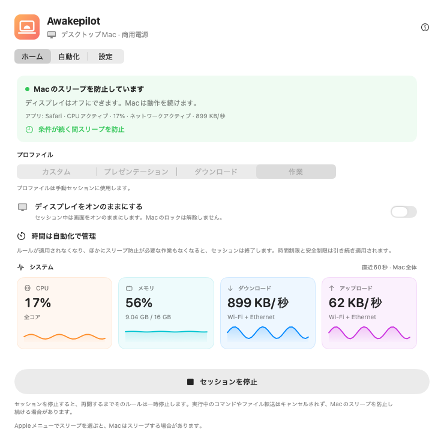
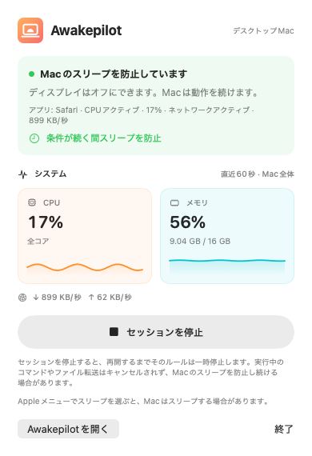
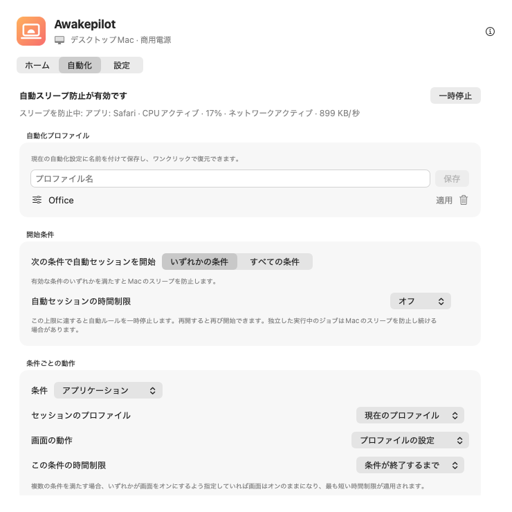

柔軟なセッション
無期限、指定時間、または特定の日時までMacのスリープを防ぎます。
15分1時間2時間∞
ビルド、動画の書き出し、大容量転送中の自動スリープを防ぎます。時間や条件を設定してください。時間切れや条件の終了で保護を解除しますが、ほかの作業が必要としている場合は継続します。


時間や開始条件を選びます。スリープ防止が終了すると、Macは通常のスリープ設定に従います。すぐにスリープさせるわけではありません。
無期限、指定時間、または特定の日時までMacのスリープを防ぎます。
CPU、メモリ、ダウンロード、アップロードを見やすいグラフで確認できます。
監視する対象を選びます。アプリが開いている間、プロセスの実行中、選択したドライブの接続中にスリープを防ぎます。
電源アダプタ、バッテリー上限、UPS状態、画面設定を尊重します。
選択した書き込み可能な外部ドライブの小さなファイルを定期更新し、ドライブの稼働維持を助けます。
いつ保護が始まり、なぜ続き、いつ終了したかを確認できます。

スリープを防いでいるアプリ、プロセス、条件を確認できます。ルールが成立しなくなり、ほかの作業も保護を必要としなければ、通常のスリープ設定に戻ります。
アプリが開いていても作業の継続を証明できません。CPUや通信量の低下も作業完了を保証しません。
監視対象、画面動作、時間上限を選びます。成立中の条件や最近の変更はアプリで確認できます。
スタジオのネットワークや仕事用VPNで開始。通話用に画面を表示し、安全上限で停止します。
書き出しプロセスを名前で監視し、画面を消せるようにします。プロセス終了で保護を解除しますが、別のルールやジョブが必要とする場合は続きます。
アーカイブディスクのマウント時にコピーを保護。Drive Aliveは選択した書き込み可能なボリュームだけに使います。
ひとつの条件で開始するか、すべての条件を要求できます。たとえばオフィスWi-Fiと外部ドライブの接続が両方ある場合です。
選択した書き込み可能な外部ドライブで、小さなマーカーを更新します。他のアプリのファイルは上書きしません。無効化すると専用マーカーを削除し、再接続後にも対応します。
状態をいつでも把握できます。Awakepilotは意味のある変化を記録し、CPUや通信の毎回の測定で履歴を埋めません。
通信の活動やバックアップドライブを監視。活動が設定値を下回った状態が続くか、ドライブが外れるとルールを終了します。
ターミナルのプロセスを名前で監視するか、コマンドの実行中ずっとスリープを防ぎます。
プレゼンテーション条件が成立している間だけ画面オンのプロファイルを適用します。
電源と時間の安全上限を維持しつつ、Macを接続可能な状態に保ちます。
アカウント、広告、解析、テレメトリーはありません。設定はローカルに保存し、公式サイトへ接続するのは更新確認と公式パッケージの取得時です。
プライバシーの詳細 →署名済み・Apple公証済みのmacOSユニバーサル版をダウンロード。
アプリケーションへドラッグ。アカウントや定期購入は不要です。